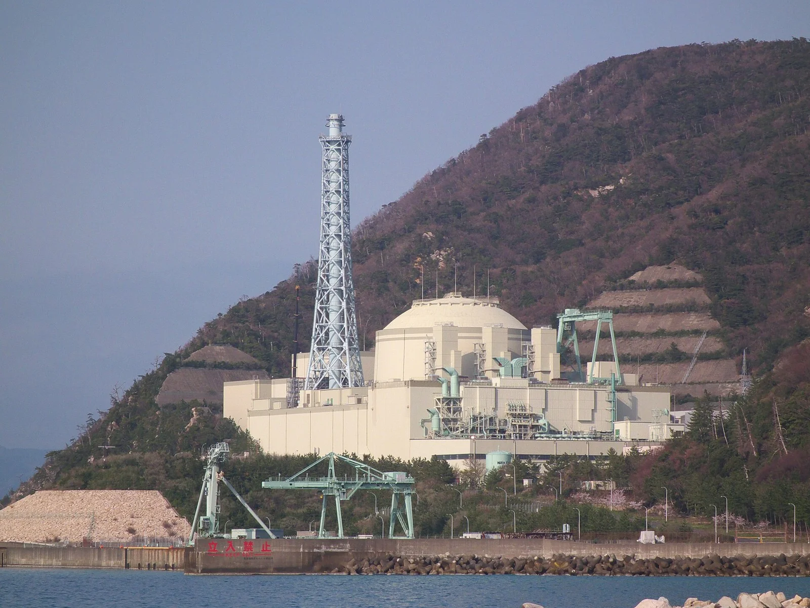
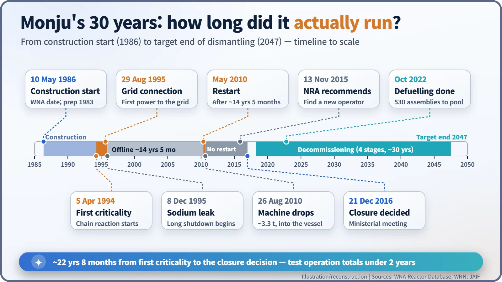
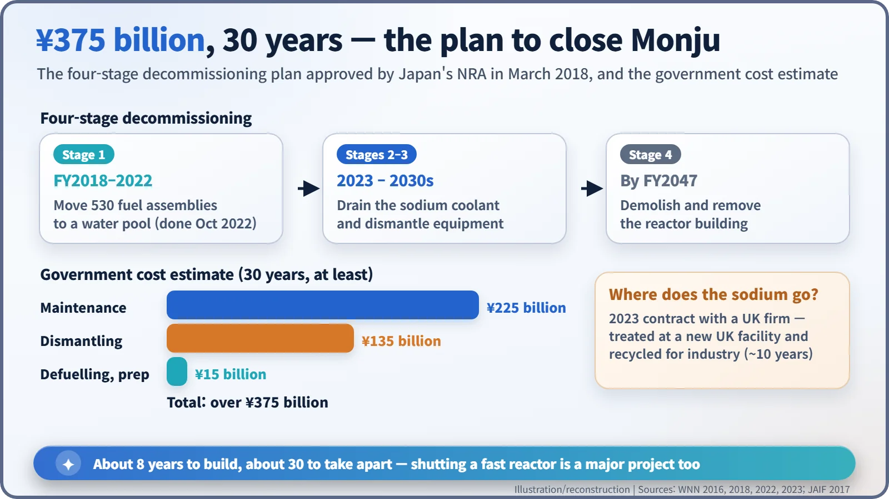
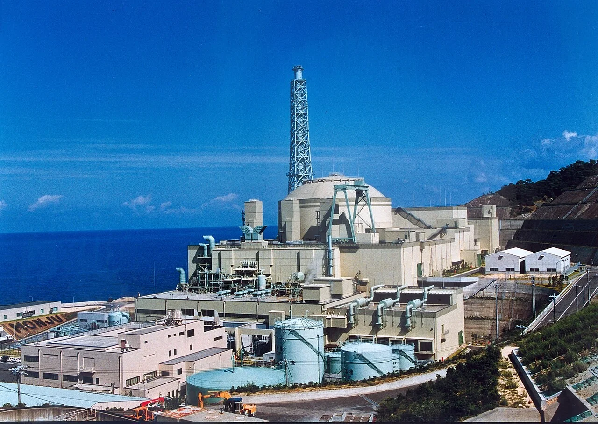

Nuclear History · 214
Reading a Reactor's Story Backwards — Monju, Japan's Prototype Fast Breeder, and Its 30 Years
Named after the bodhisattva of wisdom, Japan's prototype fast breeder spent most of its life shut down, and is now in a 30-year decommissioning plan.
Monju, Japan's 280-megawatt prototype fast breeder reactor at Tsuruga, first went critical on 5 April 1994 but was halted by a sodium leak in December 1995 and then by a string of setbacks. In the 22 years before the government decided to close it in December 2016, its test operation added up to less than two years. Its fuel was removed by October 2022, and dismantling is planned to run until fiscal year 2047.
Starting at the end
In October 2022, at the tip of the Tsuruga Peninsula in Fukui Prefecture, Japan, the last fuel assembly was lifted out of a reactor and moved into a storage pool. It was number 530; the work of taking them out one by one had begun in 2018. The reactor was called Monju. It had once carried the hopes of Japan's long-term energy policy, yet in the 22 years after it first went critical, all its periods of test operation added up to less than two years. Let's tell its story from the end and work backwards. [4]

A dream of making more fuel than you burn
It started with a worry about resources. Japan imports almost all of its uranium, so it adopted a national fuel-cycle policy: reprocess spent fuel from light-water reactors to recover plutonium, then burn that plutonium in fast breeder reactors that would multiply the fuel supply. A fast breeder uses fast neutrons to turn uranium-238, which hardly burns in ordinary reactors, into plutonium, so it can make more fuel than it consumes. Because it must not slow its neutrons down, it cannot be cooled with water; it uses liquid sodium metal instead. [8]
The organisation leading this path was the Power Reactor and Nuclear Fuel Development Corporation (PNC), founded in 1967. In 1977 it started up Joyo, an experimental fast reactor at Oarai in Ibaraki Prefecture. The next step was Monju, a "prototype" that would actually generate electricity. If an experimental reactor is a bicycle with training wheels, a prototype is the first ride out on a real road.
The name comes from Monju, the Japanese name of Manjusri, the bodhisattva of wisdom. Fugen, an advanced thermal reactor in the same city of Tsuruga, was named after Samantabhadra, the bodhisattva associated with compassion. According to the account usually given, the pairing expressed a wish to control an enormous power with wisdom and compassion.
A 714-megawatt prototype wakes up in 1994
Monju is a loop-type, sodium-cooled prototype fast breeder rated at 714 megawatts of heat (MWt) and 280 megawatts of electricity gross (246 MWe net). The World Nuclear Association (WNA) gives the construction start as 10 May 1986, but preparatory work began in 1983, so sources quote different start years. [1]
The reactor first reached criticality, a self-sustaining chain reaction, on 5 April 1994, and first sent power to the grid on 29 August 1995. Less than four months later, on 8 December 1995, a temperature-sensor sleeve (a thermowell) in the secondary cooling loop broke and sodium leaked out. Nobody was injured and no radioactivity escaped the buildings, but the operator's attempts to conceal the scale of the damage, including an edited video of the scene, turned the incident into a serious crisis of public trust. [2] [5]
Fourteen and a half years of silence, then 3.3 tonnes
Monju stayed shut. The courts got involved: in January 2003 the Kanazawa branch of the Nagoya High Court ruled the reactor's licence invalid, and in May 2005 Japan's Supreme Court overturned that ruling. Meanwhile the operator changed too: PNC became the Japan Nuclear Cycle Development Institute in 1998 and was merged into the Japan Atomic Energy Agency (JAEA) in 2005.
In May 2010, after about 14 years and 5 months, the reactor came back to life. Three months later, on 26 August, after refuelling work, an in-vessel transfer machine weighing about 3.3 tonnes fell into the reactor vessel. Fishing it out of opaque liquid sodium took until June 2011. [2]

When 9,679 boxes on the checklist were empty
The decisive blow came from paperwork. In November 2012 it emerged that, out of about 39,000 components, 9,679 had missed their scheduled inspections. Japan's Nuclear Regulation Authority (NRA) barred preparations for a restart in May 2013, and on 13 November 2015 it recommended that the science and education minister find a new operator, judging that JAEA was not fit to run the plant. It was rare for a regulator to go as far as asking for a different operator. [2]
No new operator appeared. On 21 December 2016 a meeting of government ministers formally decided to decommission Monju. A major factor was the estimate that meeting the safety standards tightened after the 2011 Fukushima accident would cost hundreds of billions of yen more. The government said fast reactor development would continue; Fukui's governor objected that dismantling could not be left to JAEA alone. By then, reported spending on Monju had passed roughly one trillion yen. [2] [8]
Eight years to build, thirty to close
In March 2018 the NRA approved a four-stage decommissioning plan lasting about 30 years. Stage 1, removing the fuel, ended in October 2022, the scene this story began with. Next comes draining the sodium coolant and dismantling equipment; under a 2023 contract the sodium will be treated at a new facility in the United Kingdom and recycled for industrial use. Stage 4, demolishing the reactor building, is due to finish by fiscal year 2047, and the government's decommissioning estimate alone is more than 375 billion yen. [3] [4] [5] [6]

| Government decommissioning estimate (30 years) | Amount |
|---|---|
| Maintenance | ¥225 billion |
| Dismantling | ¥135 billion |
| Defuelling and preparation | ¥15 billion |
| Total | over ¥375 billion |
What a prototype really needs
It is easy to sum up Monju's 30 years with the single word "failure." But the record raises questions wider than the technology. A large prototype reactor is complete only when it has more than a design: a culture that reports openly, an organisation that keeps track of tens of thousands of components without gaps, and the ability to hold on to people and skills through long shutdowns. That is the lesson a reactor named after the bodhisattva of wisdom left over three decades.
